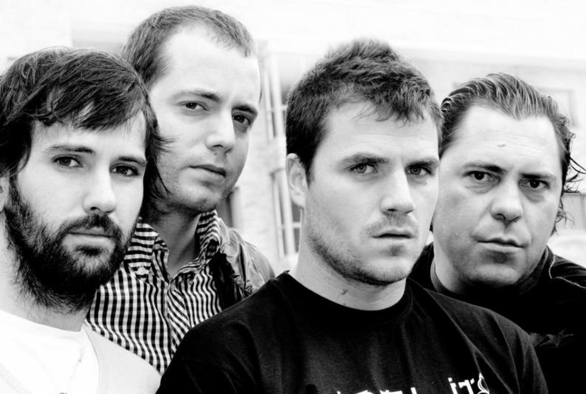

Canto del Loco
ES un grupo español de música pop rock, fue creado en 1994

Integrantes del grupo
Dani Martín
David Otero
Chema Ruiz
Jandro Velázquez
Discografía
Grandes éxitos del Canto del Loco
Año
Disco
2000
El Canto del Loco
2005
Zapatillas
2008
Personas
"Zapatillas" es el album más exitoso
Sitios web
Web El Canto del Loco